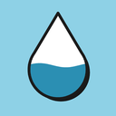

PlainSip privacy policy
This policy covers the PlainSip Android app (“PlainSip”), a water reminder and drink tracker. In short: PlainSip does not collect, sell or share any data. It has no account, no ads, no analytics and no tracking. The app does not have permission to use the internet.
Information the app handles
- The drinks you log: kind, amount and time.
- Your daily goal, and, only if you enter it, your weight and activity level (used on the phone to suggest a goal).
- Your reminder schedule and settings.
All of this stays on your phone, in the app's private storage. None of it is ever sent to the developer or anyone else.
Permissions
- Notifications: to show drink reminders. Asked only when you turn reminders on.
- Run at startup: to set the reminders again after your phone restarts.
- Alarms & reminders (optional, off by default): only if you switch on on-the-minute timing in the reminder health check.
- Vibration: for reminders, if you leave vibration on.
Home-screen widget
The widget shows today's total and logs a cup when you tap it. It reads and writes the same private storage on your phone.
Backups and exports
Your data leaves the phone only when you choose to back it up or export it as a file, and only to the place or app you pick (for example your Downloads folder or a cloud drive you use). Restoring a backup reads the file you choose.
Storage and deletion
Deleting a drink in the app removes it from your history. Uninstalling the app removes all its data. Since we never receive your data, there is nothing for us to delete on our side.
Not medical advice
PlainSip is a general wellness logger. It does not diagnose, treat or give medical advice.
What we don't do
- We don't collect personal or sensitive information.
- We don't sell or transfer user data to third parties.
- We don't show ads or use advertising IDs.
- We don't use analytics or crash-reporting services.
Children
The app is not directed at children under 13 and does not knowingly collect information from anyone.
Changes
If this policy changes, the updated version will be posted on this page with a new date.
Contact
Questions or requests: email tmosby137@gmail.com, or open an issue on GitHub (issues are public, so please use email for anything personal).